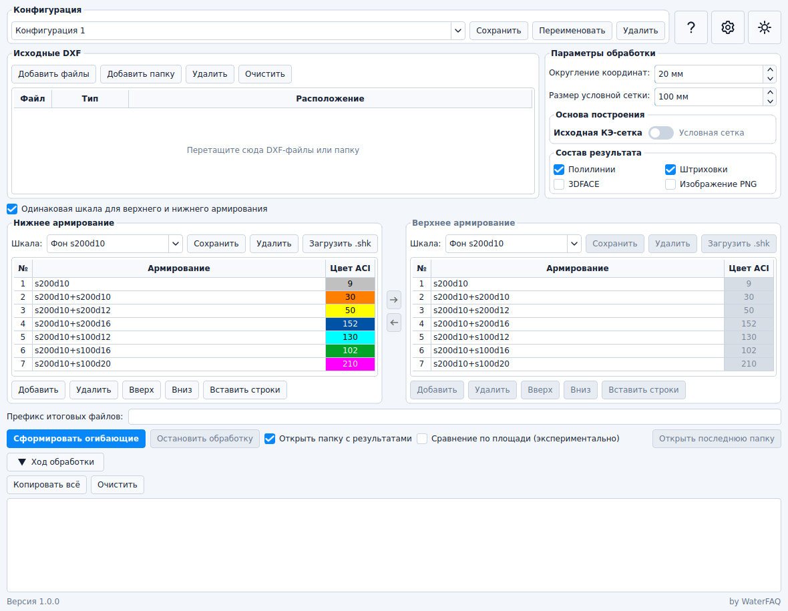

Четыре направления
Отдельное объединение файлов для нижнего и верхнего армирования по осям X и Y.
OgibArm объединяет результаты ЛИРА-САПР по направлениям NX, NY, VX и VY, выбирает максимальное требуемое армирование и формирует готовые огибающие для дальнейшей работы в CAD.

Параметры обработки собраны в одном окне, а исходные файлы остаются без изменений.
Отдельное объединение файлов для нижнего и верхнего армирования по осям X и Y.
Работа с выгрузками ЛИРА-САПР 2021 и 2024 и автоматическое распознавание типа DXF.
Полилинии, штриховки, объекты 3DFACE, исходная КЭ-сетка или заданная условная сетка.
Общая или раздельные шкалы, собственные ступени и загрузка файлов .shk.
Готовые чертежи и изображения до 8192 пикселей с белым или прозрачным фоном.
Предварительные проверки, журнал этапов, предупреждения и безопасная остановка обработки.
Отдельная огибающая для каждого загруженного и назначенного направления.
Программа создаёт только те результаты, для которых действительно загружены и назначены исходные файлы.
OgibArm_1.0.1.zip в удобную папку.OgibArm.exe.Исходные файлы и результаты не передаются разработчику. Интернет используется только для проверки наличия новой версии, если эта функция включена пользователем.
Опишите исходные данные, ожидаемый результат и приложите журнал обработки, если это возможно.